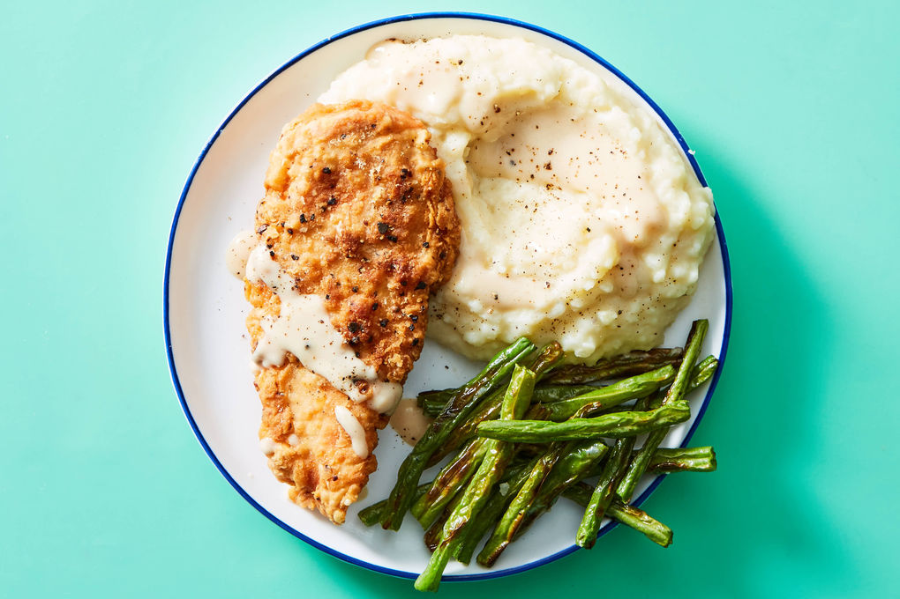

Chicken-Fried Chicken

Description
Chicken-fried chicken is a play on chicken-fried chicken. It has a golden, crispy exterior which is smothered in creamy gravy. This dish is paired with mashed potatoes and green beans.
Ingredients
- 2 russett potatoes
- 2 (10 oz) pkgs boneless, skinless chicken breast
- 1 (¼ oz) steak seasoning
- 1 lb green beans
- 1 pkt turkey broth concentrate
- Kosher salt
- Ground pepper
- 4 tbsp butter
- 1 cup milk
- 2 large eggs
- 1 cup all-purpose flour
- neutral oil
Steps
-
Step 1
-
Step 2
-
Step 3
-
Step 4
-
Step 5